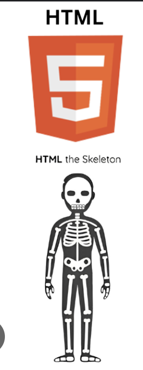

Amna Ulfat
Categories


Web development is the backbone of our digital world. It encompasses the creation of websites and web applications, blending design and functionality. Front-end development focuses on the user interface, while back-end development manages server-side operations and data management. Together, they craft captivating online experiences, driving innovation and connectivity.